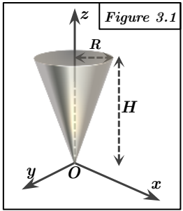

Exercice 3 : Tenseurs d'inertie de corps volumiques
Pour tous les exercices, $\rho$ désigne la masse volumique homogène. Les tenseurs d'inertie sont calculés au point O dans la base $R(O, \vec{i}, \vec{j}, \vec{k})$. Les composantes du tenseur d'inertie sont définies comme : $A = I_{xx} = \iiint_V (y^2 + z^2)dm$, $B = I_{yy} = \iiint_V (x^2 + z^2)dm$, $C = I_{zz} = \iiint_V (x^2 + y^2)dm$, $D = I_{xy} = \iiint_V xy dm$, $E = I_{xz} = \iiint_V xz dm$, $F = I_{yz} = \iiint_V yz dm$. où $dm = \rho dV$. La matrice d'inertie en O est :
$$ [I_O] = \begin{pmatrix} A & -D & -E \\ -D & B & -F \\ -E & -F & C \end{pmatrix} $$

Figure 3.1 : Cône inversé
Cône de révolution, sommet en O, axe Z, hauteur H, rayon de la base R.
Méthode requise : Calcul direct (coordonnées cylindriques).
Concepts Clés :
- Matrice d'inertie, Corps volumique ($dm = \rho dV$).
- Coordonnées cylindriques : $x = r \cos \theta$, $y = r \sin \theta$, $z = z$. $dV = r dr d\theta dz$.
- Symétrie : Symétrie de révolution autour de l'axe Z. L'axe Z est axe principal d'inertie. Tout axe dans le plan XY passant par O est principal. Donc $A = B$ et $D = E = F = 0$. La matrice est diagonale.
Géométrie et Paramétrisation :
- Le rayon du cône à la hauteur $z$ est $r_z = \frac{R}{H}z$.
- Domaine d'intégration : $z \in [0, H]$, $\theta \in [0, 2\pi]$, $r \in [0, (R/H)z]$.
- Élément de masse : $dm = \rho r dr d\theta dz$.
- Masse totale :
$$ M = \iiint_V \rho dV = \rho \int_0^H \int_0^{2\pi} \int_0^{(R/H)z} r dr d\theta dz $$
$$ = \rho \int_0^H \int_0^{2\pi} \left[ \frac{r^2}{2} \right]_0^{(R/H)z} d\theta dz = \rho \int_0^H \int_0^{2\pi} \frac{1}{2} \left(\frac{R}{H}\right)^2 z^2 d\theta dz $$
$$ = \frac{1}{2} \rho \left(\frac{R}{H}\right)^2 \int_0^H z^2 [\theta]_0^{2\pi} dz = \frac{1}{2} \rho \left(\frac{R}{H}\right)^2 (2\pi) \int_0^H z^2 dz $$
$$ = \rho \pi \frac{R^2}{H^2} \left[ \frac{z^3}{3} \right]_0^H = \rho \pi \frac{R^2}{H^2} \frac{H^3}{3} = \frac{1}{3} \rho \pi R^2 H $$
Calcul des termes du tenseur :
Calcul de C ($I_{zz}$) :
$$ C = I_{zz} = \iiint_V (x^2 + y^2) dm = \iiint_V r^2 (\rho r dr d\theta dz) $$
$$ = \rho \int_0^H \int_0^{2\pi} \int_0^{(R/H)z} r^3 dr d\theta dz $$
$$ = \rho \int_0^H \int_0^{2\pi} \left[ \frac{r^4}{4} \right]_0^{(R/H)z} d\theta dz = \rho \int_0^H \int_0^{2\pi} \frac{1}{4} \left(\frac{R}{H}\right)^4 z^4 d\theta dz $$
$$ = \frac{1}{4} \rho \left(\frac{R}{H}\right)^4 \int_0^H z^4 [\theta]_0^{2\pi} dz = \frac{1}{4} \rho \left(\frac{R}{H}\right)^4 (2\pi) \int_0^H z^4 dz $$
$$ = \frac{\pi \rho R^4}{2 H^4} \left[ \frac{z^5}{5} \right]_0^H = \frac{\pi \rho R^4}{2 H^4} \frac{H^5}{5} = \frac{1}{10} \rho \pi R^4 H $$
$$ = \frac{3}{10} \left( \frac{1}{3} \rho \pi R^2 H \right) R^2 = \frac{3}{10} M R^2 $$
Calcul de A ($I_{xx}$) :
$$ A = I_{xx} = \iiint_V (y^2 + z^2) dm = \iiint_V ((r \sin \theta)^2 + z^2) (\rho r dr d\theta dz) $$
$$ = \rho \int_0^H \int_0^{2\pi} \int_0^{(R/H)z} (r^3 \sin^2 \theta + z^2 r) dr d\theta dz $$
$$ = \rho \int_0^H \int_0^{2\pi} \left[ \frac{r^4}{4} \sin^2 \theta + z^2 \frac{r^2}{2} \right]_0^{(R/H)z} d\theta dz $$
$$ = \rho \int_0^H \int_0^{2\pi} \left( \frac{1}{4} \left(\frac{R}{H}\right)^4 z^4 \sin^2 \theta + \frac{z^2}{2} \left(\frac{R}{H}\right)^2 z^2 \right) d\theta dz $$
$$ = \rho \int_0^H \left( \frac{1}{4} \left(\frac{R}{H}\right)^4 z^4 \int_0^{2\pi} \sin^2 \theta d\theta + \frac{1}{2} \left(\frac{R}{H}\right)^2 z^4 \int_0^{2\pi} d\theta \right) dz $$
On sait que $\int_0^{2\pi} \sin^2 \theta d\theta = \int_0^{2\pi} \frac{1-\cos(2\theta)}{2} d\theta = \left[ \frac{\theta}{2} - \frac{\sin(2\theta)}{4} \right]_0^{2\pi} = \pi$. Et $\int_0^{2\pi} d\theta = 2\pi$.
$$ A = \rho \int_0^H \left( \frac{1}{4} \left(\frac{R}{H}\right)^4 z^4 (\pi) + \frac{1}{2} \left(\frac{R}{H}\right)^2 z^4 (2\pi) \right) dz $$
$$ = \rho \pi \int_0^H \left( \frac{R^4}{4H^4} z^4 + \frac{R^2}{H^2} z^4 \right) dz $$
$$ = \rho \pi \left( \frac{R^4}{4H^4} + \frac{R^2}{H^2} \right) \int_0^H z^4 dz $$
$$ = \rho \pi \left( \frac{R^4}{4H^4} + \frac{R^2}{H^2} \right) \left[ \frac{z^5}{5} \right]_0^H = \rho \pi \left( \frac{R^4}{4H^4} + \frac{R^2}{H^2} \right) \frac{H^5}{5} $$
$$ = \rho \pi \left( \frac{R^4 H}{20} + \frac{R^2 H^3}{5} \right) $$
$$ = \frac{3}{20} \left(\frac{1}{3} \rho \pi R^2 H \right) R^2 + \frac{3}{5} \left(\frac{1}{3} \rho \pi R^2 H \right) H^2 $$
$$ = \frac{3}{20} M R^2 + \frac{3}{5} M H^2 = M \left( \frac{3R^2}{20} + \frac{3H^2}{5} \right) $$
- Par symétrie de révolution, $B = I_{yy} = A = M \left( \frac{3R^2}{20} + \frac{3H^2}{5} \right)$.
- Par symétrie de révolution, les produits d'inertie sont nuls : $D = I_{xy} = 0$, $E = I_{xz} = 0$, $F = I_{yz} = 0$.
Résultat :
Le tenseur d'inertie en O est :
$$ [I_O]_{3.1} = \begin{pmatrix} M(\frac{3R^2}{20} + \frac{3H^2}{5}) & 0 & 0 \\ 0 & M(\frac{3R^2}{20} + \frac{3H^2}{5}) & 0 \\ 0 & 0 & \frac{3}{10}MR^2 \end{pmatrix} $$
Vérification :
La matrice est diagonale et $A = B$, ce qui est cohérent avec la symétrie de révolution autour de l'axe Z. Les formules obtenues sont conformes aux résultats connus pour un cône.